master: chair
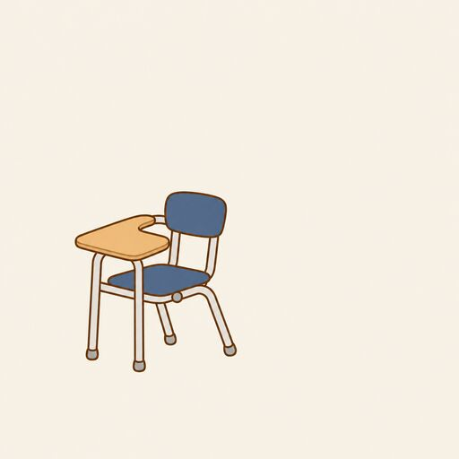

M1-chair
A first look at pictures for a Looksee set that teaches place words: on, under, next to, between and in. Each picture was made with image generation as an edit of an empty scene, so between the cards of one scene only the child or the object moves, never the furniture. Nobody stands on furniture. Every picture is shown as it was made, then cut out on the four stage themes Looksee offers. These are drafts and are not in the app yet.

M1-chair
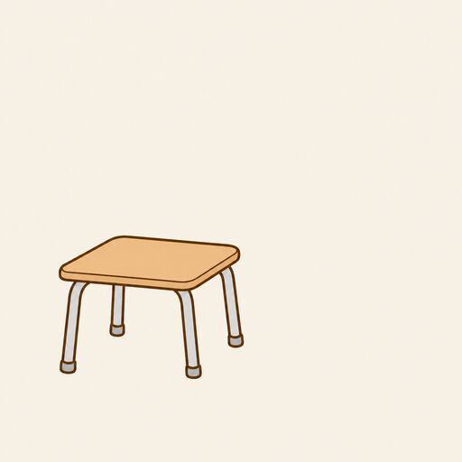

M2-table
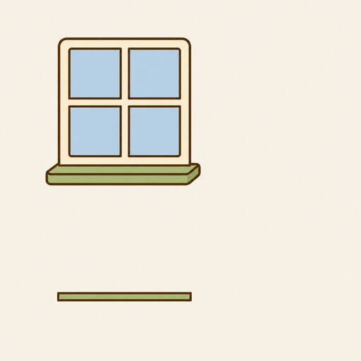

M3-window
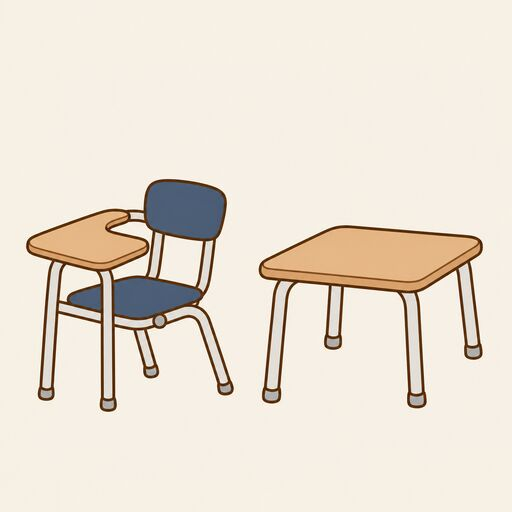

M4-chair-table
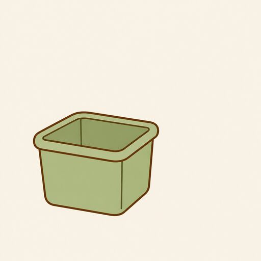

M5-bin
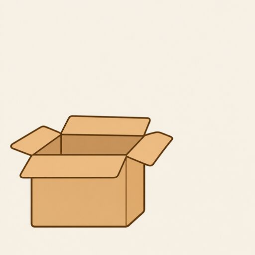

M6-box
Ana sits on the chair
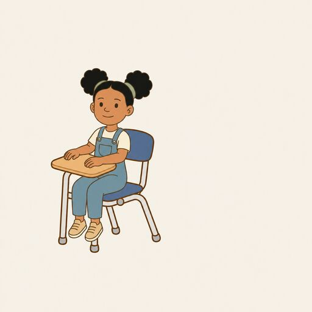

C1-ana-on-chair
the ball is under the chair
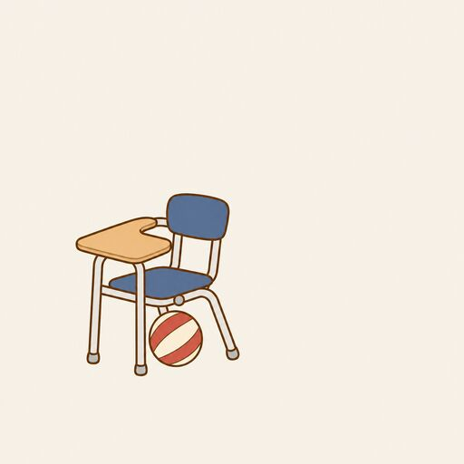

C2-ball-under-chair
Sam is next to the chair
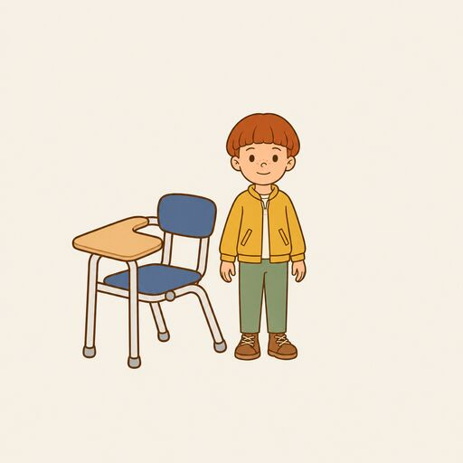

C3-sam-next-to-chair
the teddy is on the table
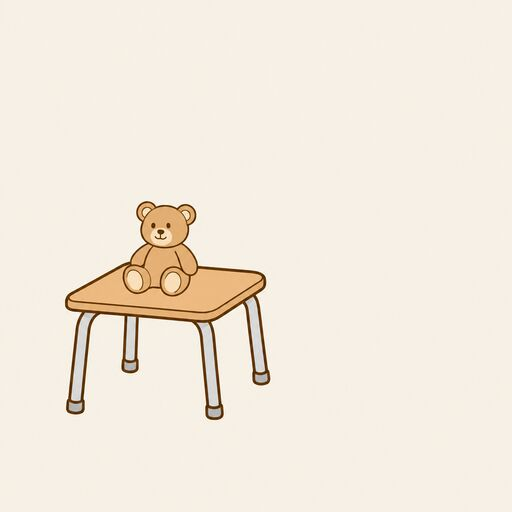

T1-teddy-on-table
Max sits under the table
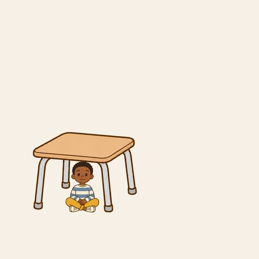

T2-max-under-table
Jo is next to the table
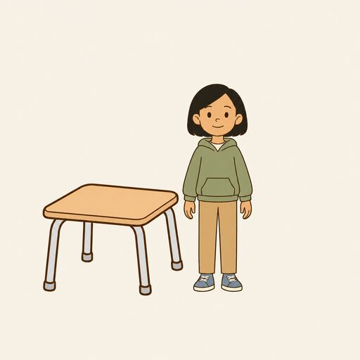

T3-jo-next-to-table
the teddy is on the ledge
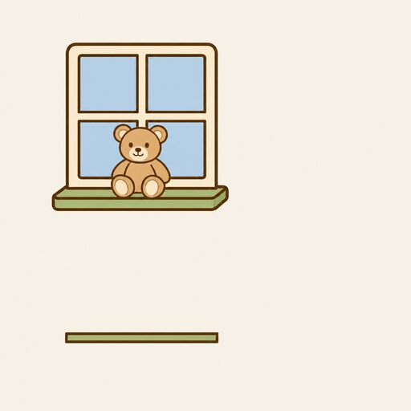

W1-teddy-on-ledge
the ball is under the ledge
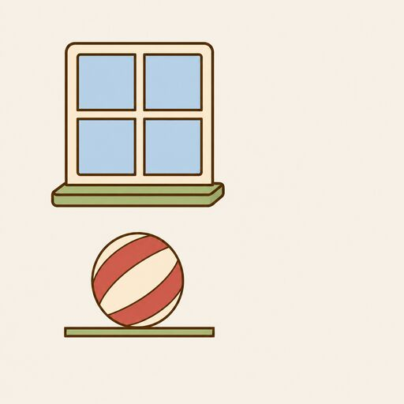

W2-ball-under-ledge
Ana is next to the window
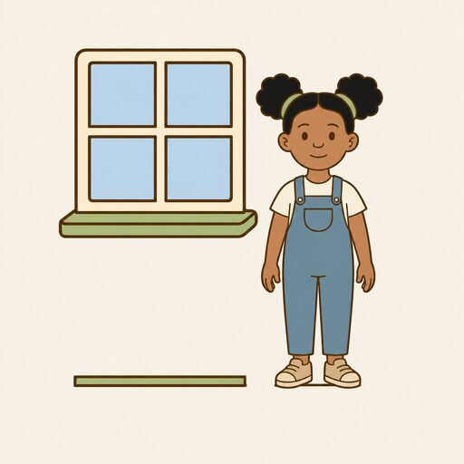

W3-ana-next-to-window
Jo is between the chair and the table
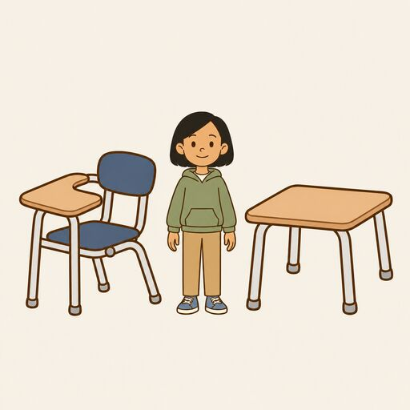

B1-jo-between
the ball is between the chair and the table
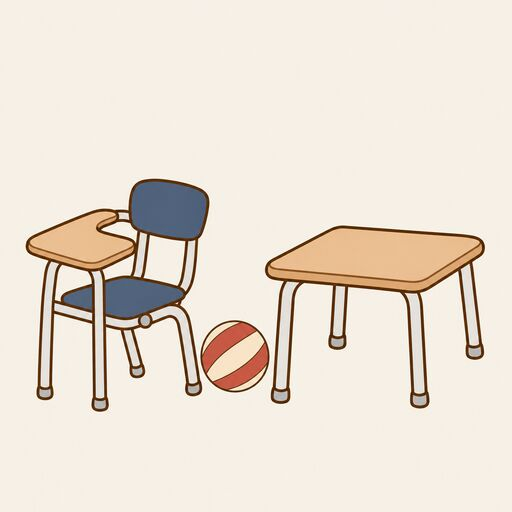

B2-ball-between
the teddy is in the bin
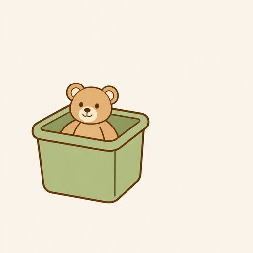

N1-teddy-in-bin
the teddy is next to the bin
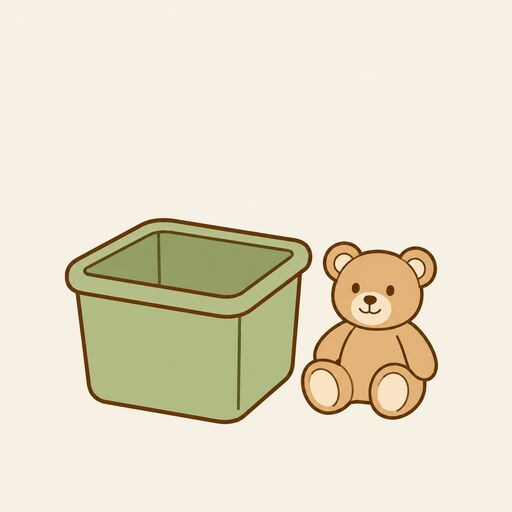

N2-teddy-next-to-bin
the puppy is under the chair
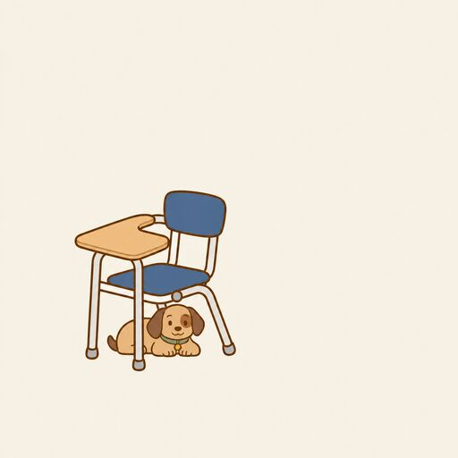

P1-puppy-under-chair
the puppy is in the bin
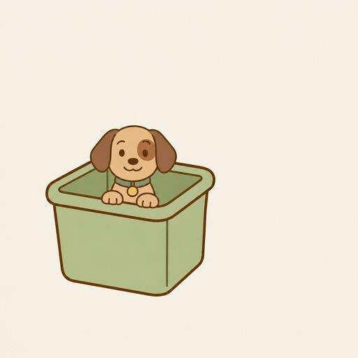

P2-puppy-in-bin
the puppy is between the chair and the table
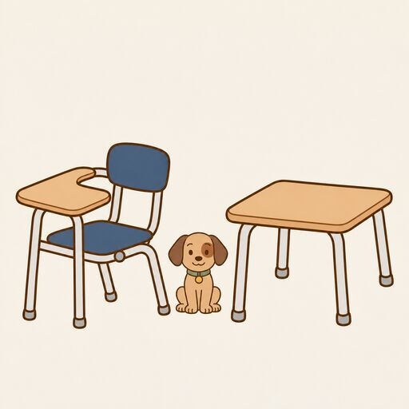

P3-puppy-between
the puppy is next to the table
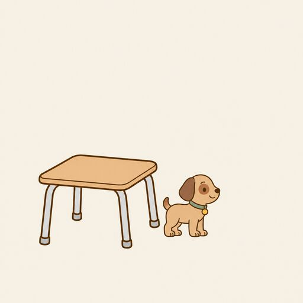

P4-puppy-next-to-table
Sam is in the box
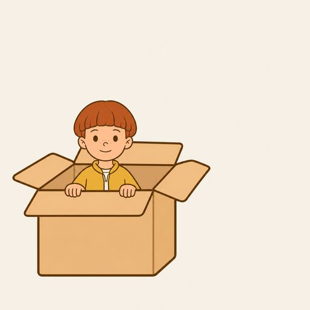

N3-sam-in-box
Sam is next to the box
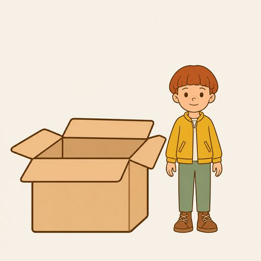

N4-sam-next-to-box